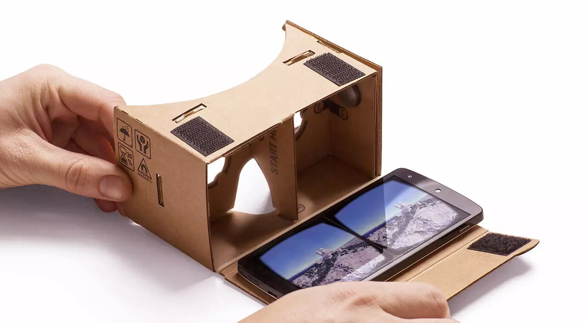
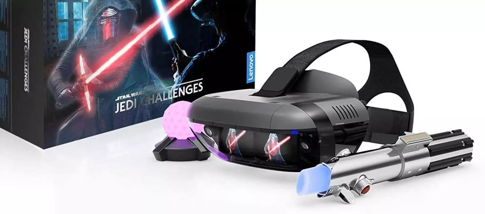

¿Qué es la Realidad Virtual?
La realidad virtual es la creación de un entorno o escenario ficticio o simulado con apariencia totalmente real y que nos permite trasladarnos a cualquier lugar o situación que queramos como si nos creyésemos dentro de él, con la ilusión de estar dentro de este entorno. A través de un dispositivo como gafas o cascos de realidad virtual podemos sumergirnos dentro de juegos donde nos creemos nuestros personajes o viajar por todo el mundo sin movernos del sofá del salón, pero a través de una experiencia totalmente realista. Además, permite la utilización de otros dispositivos… Por ejemplo, puedes usar auriculares o espadas láser simuladas.
Hay muchos niveles según la inmersión… lo “máximo” es acudir a simuladores profesionales o experiencias que incluyen todo tipo de
accesorios para movernos en este entorno simulado y para interactuar con él. Por ejemplo, te permiten conducir vehículos o puedes
viajar por el espacio. Pero también puedes disfrutar de la tecnología y de sus ventajas a través de la pantalla de un teléfono
móvil o de juegos compatibles con consolas domésticas.
Puede parecer totalmente futurista pero la realidad virtual es una realidad que ha ido avanzando desde los años ochenta y mejorando las posibilidades, la tecnología empleada. En el ámbito de los videojuegos ya a finales de la década de los ochenta llegaba el Famicon 3D System y en los noventa se lanzaba el simulador Sega VR-1. Mucho ha cambado hasta la llegada de Oculus Quest, uno de los más avanzados en la actualidad.
¿Cómo funciona?
¿Cómo se consigue la sensación de estar dentro de un espacio creado por ordenador? Necesitamos unas gafas o cascos específicos y el vídeo o dispositivo que crea el entorno, que puede ser tu teléfono móvil o tu ordenador. Las gafas nos aíslan de todo lo que nos rodean y amplían el campo de visión haciendo que parezca que la pantalla está alrededor y no solo “delante” de nosotros aunque realmente no están envolviéndonos en 360 grados. Para engañarnos, utilizan dos imágenes diferentes en cada ojo. Más que dos imágenes, son dos ángulos diferentes de la misma escena. Esto hace que se simule profundidad y que, sin gafas, los vídeos dedicados a esta tecnología los veas como doble o en dos trozos diferenciados.
Además, se utilizan sensores específicos que permiten detectar si nosotros nos giramos para conseguir así que el espacio gire con nosotros ya sea en el propio teléfono móvil (si utilizas unas como las Cardboard) o directamente en el casco en sí que cuenta con sensores propios para detectarlo.
Usos
Aunque aún no se aprovecha al máximo o no la hemos incorporado en nuestro día a día, esta tecnología tiene muchos usos de distintos ámbitos…
Juegos
Los juegos son uno de los principales usos de la realidad virtual gracias al hardware específico que han lanzado diferentes fabricantes en los últimos diez años. Con las PS VR, por ejemplo, podemos jugar a todo tipo de títulos… Lucha, disparos, zombies y hasta carreras de coches o peleas de espaldas láser. Los juegos están disponibles para ordenador o para consolas que cuentan con algún hardware compatible con esta tecnología, como es el caso de PlayStation.
La experiencia puede ser mucho más real e inmersiva gracias a que nos metemos de lleno en la historia y no simplemente aparece en una pantalla. Una forma totalmente diferente de enfocar el gaming pero con el inconveniente de tener que desembolsar grandes cantidades de dinero en el equipo necesario para poder acceder a estos juegos.
Educación
En el ámbito de la educación, la realidad virtual aporta todo tipo de ventajas a cualquier edad. Desde niños pequeños capaces de explorar cualquier parte del mundo sin moverse del aula hasta estudiantes universitarios que podrán profundizar en todo tipo de campos: desde el aprendizaje de la medicina hasta el turismo, la tecnología, la ciencia o la robótica.
Desde pequeños los niños pueden conocer más sobre los planetas o sobre la fauna marina, por ejemplo, sumergiéndose de lleno en el océano o visitando diferentes ecosistemas para entender las diferencias, las características. Hay proyectos específicos para utilizar esta tecnología y aplicaciones de todas las materias, desde la física hasta juegos de arcade y estrategia para utilizar con las Carboard de Google, como InMind Vr2.